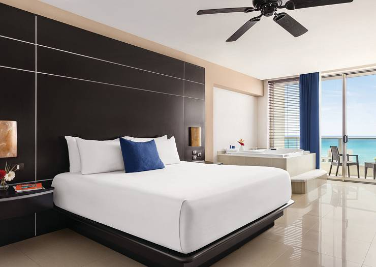

Suites
Sus suites destacan entre os alojamientos de lujo por su elegante decoración, cuidadosos detalles,
aplitud de espacios e innovadores servicios a disposición de cada invitado. Disfrute de espaciosas
suites llenas de luz natural y puestas de sol únicas en su propio balcón.
Suite estándar king o doble
Relájese en estas amplias habitaciones estándar equipadas con cama king o dos camas dobles,
balcón privado, además de estilo y comodidad. Con una vista al resort, ocupación máxima de 4
y camas Kings o Dobles.
Además, cuenta con: balcón privado, wifi gratis, aire acondicionado, servicio a la habitación, secadora,
televisión, plancha, servicio wake up call, caja fuerte, detector de humo, luz natural, teléfono,
bañera, minibar y set de baño.
Reservar
Suite familiar king o doble
Dotadas de espacio y comodidad para cada miembro de la familia, estas suites ofrecen una cama king
o dos camas dobles, ocupación máxima de 5, un área independiente con literas de tres camas
individuales y vistas parciales al mar desde el balcón privado.
Además, cuenta con: balcón privado, wifi gratis, aire acondicionado, servicio a la habitación, secadora,
televisión, plancha, servicio wake up call, caja fuerte, detector de humo, luz natural, teléfono,
bañera, minibar y set de baño.

Reservar
Suite sunset king o doble
Admire una impresionante puesta de sol mientras se relaja en la tina de hidromasaje de la terraza.
Esta suite ofrece vistas a la laguna Nichupté y a la exuberante selva maya. Tiene una ocupación
máxima de 4 y cuenta con camas King o Dobles.
Además, cuenta con: balcón privado, wifi gratis, aire acondicionado, servicio a la habitación, secadora,
televisión, plancha, servicio wake up call, caja fuerte, detector de humo, luz natural, teléfono,
bañera, minibar, set de baño, bata de baño, bañera de hidromasaje y sandalias.
Reservar
Suite frente al mar king o doble
Estas maravillosas suites ofrecen increíbles vistas al mar, lujosas amenidades y una tina de
hidromasaje privada al aire libre. Tiene ocupación máxima de 4 y camas King o Dobles.
Además, cuenta con: balcón privado, wifi gratis, aire acondicionado, servicio a la habitación, secadora,
televisión, plancha, servicio wake up call, caja fuerte, detector de humo, luz natural, teléfono,
bañera, minibar, set de baño, bata de baño, bañera de hidromasaje y sandalias.

Reservar
Suite premium king o doble
Situada en una sección especial, esta espléndida suite ofrece vistas parciales al océano desde
el balcón, cama king o dos camas dobles, lujosas amenidades y una tina de hidromasaje privada
dentro de la suite. Tiene una ocupación máxima de 4.
Además, cuenta con: balcón privado, wifi gratis, aire acondicionado, servicio a la habitación, secadora,
televisión, plancha, servicio wake up call, caja fuerte, detector de humo, luz natural, teléfono,
bañera, minibar, set de baño, bata de baño, bañera de hidromasaje y sandalias.

Reservar
Gran master suite vista sunset king
Con una cama king y emblemáticas puestas de sol desde el amplio balcón, estas fabulosas suites
ofrecen vistas panorámicas de la laguna y la exuberante selva de manglares. Cuenta con una
ocupación máxima de 4.
Además, cuenta con: balcón privado, wifi gratis, aire acondicionado, servicio a la habitación, secadora,
televisión, plancha, servicio wake up call, caja fuerte, detector de humo, luz natural, teléfono,
bañera, minibar, set de baño, bata de baño y sandalias.

Reservar